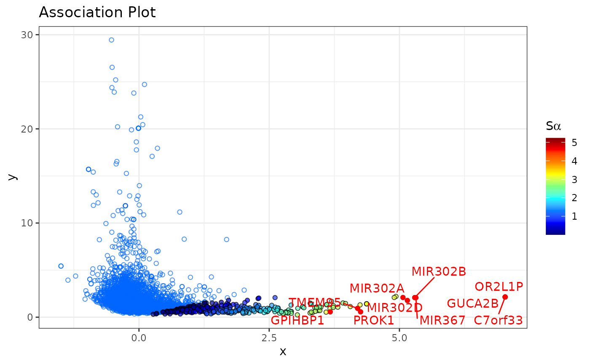
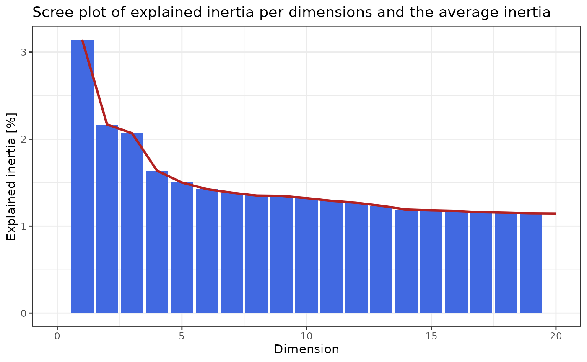
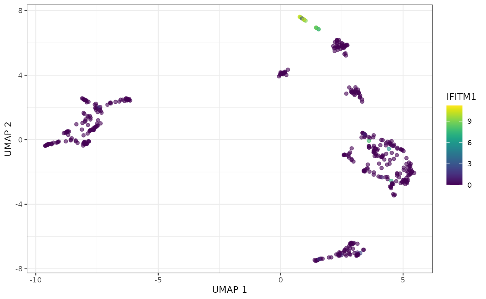
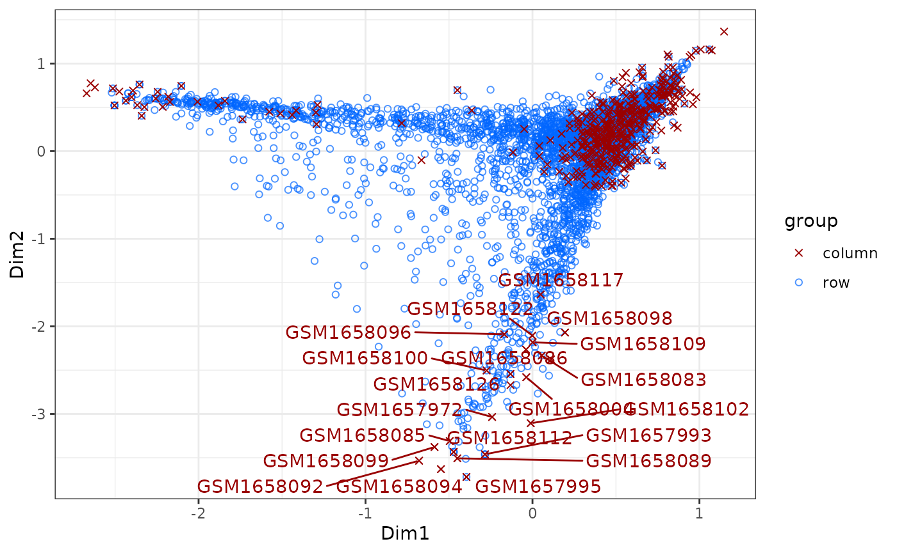
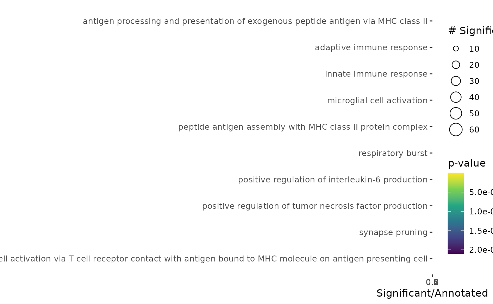

Analyzing data with APL
Elzbieta Gralinska
Max Planck Institute for Molecular Genetics, Berlin, Germanygralinska@molgen.mpg.de
Clemens Kohl
Max Planck Institute for Molecular Genetics, Berlin, Germanykohl@molgen.mpg.de
Martin Vingron
Max Planck Institute for Molecular Genetics, Berlin, Germanyvingron@molgen.mpg.de
APL.RmdAbstract
This package performs correspondence analysis (CA) and allows to identify cluster-specific genes using Association Plots (AP). Additionally, APL computes the cluster-specificity scores for all genes which allows to rank the genes by their specificity for a selected cell cluster of interest.
Introduction
“APL” is a package developed for computation of Association Plots, a method for visualization and analysis of single cell transcriptomics data. The main focus of “APL” is the identification of genes characteristic for individual clusters of cells from input data.
When working with APL package please cite:
Gralinska, E., Kohl, C., Fadakar, B. S., & Vingron, M. (2022).
Visualizing Cluster-specific Genes from Single-cell Transcriptomics Data Using Association Plots.
Journal of Molecular Biology, 434(11), 167525.A citation can also be obtained in R by running
citation("APL"). For a mathematical description of the
method, please refer to the manuscript.
Installation
To install the APL from Bioconductor, run:
if (!requireNamespace("BiocManager", quietly = TRUE)) {
install.packages("BiocManager")
}
BiocManager::install("APL")Alternatively the package can also be installed from GitHub:
To additionally build the package vignette, run instead
install_github("VingronLab/APL", build_vignettes = TRUE, dependencies = TRUE)Building the vignette will however take considerable time.
Changes regarding python dependencies
Previous versions of APL used pytorch SVD to speed up the
computation of the full SVD. This has been deprecated in favor of fast
truncated SVD implementations starting with Version 1.10.1. Calling
runAPL or cacomp with
python = TRUE will not lead to an error, but only issue a
warning. If you still want to perform a full SVD, set the dimensions to
rank of the matrix. Until a faster replacement is identified, this
computation will be performed by the rather slow base R svd and should
therefore not be done on very large matrices. The default number of
dimensions now defaults to half of the rank of the matrix.
Preprocessing
Setup
In this vignette we will use a small data set published by Darmanis et al. (2015) consisting of 466 human adult cortical single cells sequenced on the Fluidigm platform as an example. To obtain the data necessary to follow the vignette we use the Bioconductor package scRNAseq.
Besides the package APL we will use Bioconductor packages to preprocess the data. Namely we will use SingleCellExperiment, scater and scran. However, the preprocessing could equally be performed with the single-cell RNA-seq analysis suite Seurat.
The preprocessing steps are performed according to the recommendations published in Orchestrating Single-Cell Analysis with Bioconductor by Amezquita et al. (2022). For more information about the rational behind them please refer to the book.
Loading the data
We start with the loading and preprocessing of the Darmanis data.
darmanis <- DarmanisBrainData()
darmanis
#> class: SingleCellExperiment
#> dim: 22085 466
#> metadata(0):
#> assays(1): counts
#> rownames(22085): 1/2-SBSRNA4 A1BG ... ZZZ3 tAKR
#> rowData names(0):
#> colnames(466): GSM1657871 GSM1657872 ... GSM1658365 GSM1658366
#> colData names(6): metrics age ... experiment_sample_name tissue
#> reducedDimNames(0):
#> mainExpName: NULL
#> altExpNames(0):Normalization, PCA & Clustering
Association Plots from APL should be computed based on the normalized expression data. Therefore, we first normalize the counts from the Darmanis data and calculate both PCA and UMAP for visualizations later.
For now, APL requires the data to be clustered beforehand.
The darmanis data comes already annotated, so we will use the cell types
stored in the cell.type metadata column instead of
performing a clustering.
set.seed(100)
clust <- quickCluster(darmanis)
darmanis <- computeSumFactors(darmanis, cluster = clust, min.mean = 0.1)
darmanis <- logNormCounts(darmanis)
dec <- modelGeneVar(darmanis)
top_darmanis <- getTopHVGs(dec, n = 5000)
darmanis <- fixedPCA(darmanis, subset.row = top_darmanis)
darmanis <- runUMAP(darmanis, dimred = "PCA")
plotReducedDim(darmanis, dimred = "UMAP", colour_by = "cell.type")Quick start
The fastest way to compute the Association Plot for a selected
cluster of cells from the input data is by using a wrapper function
runAPL(). runAPL() automates most of the
analysis steps for ease of use.
For example, to generate an Association Plot for the oligodendrocytes we can use the following command:
runAPL(
darmanis,
assay = "logcounts",
top = 5000,
group = which(darmanis$cell.type == "oligodendrocytes"),
type = "ggplot"
)
#> Warning in rm_zeros(obj): Matrix contains rows with only 0s. These rows were
#> removed. If undesired set rm_zeros = FALSE.
#> No dimensions specified. Setting dimensions to: 93
#> Warning in rm_zeros(mat): Matrix contains rows with only 0s. These rows were
#> removed. If undesired set rm_zeros = FALSE.
#>
#> Using 13 dimensions. Subsetting.
#> | | | 0% | |======================================================================| 100%
#> | | | 0% | |======================= | 33% | |=============================================== | 67% | |======================================================================| 100%The generated Association Plot is computed based on the
log-normalized count matrix. By default runAPL uses the top
5,000 most variable genes in the data, but the data can be subset to any
number of genes by changing the value for the argument top.
The dimensionality of the CA is determined automatically by the elbow
rule described below (see here). This default
behavior can be overriden by setting the dimensions manually (parameter
dims). The cluster-specificity score
()
for each gene is also calculated (score = TRUE). In order
to better explore the data, type can be set to
"plotly" to obtain an interactive plot. runAPL
has many arguments to further customize the output and fine tune the
calculations. Please refer to the documentation (?runAPL)
for more information. The following sections in this vignette will
discuss the choice of dimensionality and the
-score.
Step-by-step way of computing Association Plots
Alternatively, Association Plots can be computed step-by-step. This allows to adjust the Association Plots to user’s needs. Below we explain each step of the process of generating Association Plots.
Correspondence Analysis
The first step of Association Plot computations is correspondence analysis (CA). CA is a data dimensionality reduction method similar to PCA, however it allows for a simultaneous embedding of both cells and genes from the input data in the same space. In this example we perform CA on the log-normalized count matrix of the darmanis brain data.
# Computing CA on logcounts
logcounts <- logcounts(darmanis)
ca <- cacomp(
obj = logcounts,
top = 5000
)
#> Warning in rm_zeros(obj): Matrix contains rows with only 0s. These rows were
#> removed. If undesired set rm_zeros = FALSE.
#> No dimensions specified. Setting dimensions to: 93
# The above is equivalent to:
# ca <- cacomp(obj = darmanis,
# assay = "logcounts",
# top = 5000)The function cacomp accepts as an input any matrix with
non-negative entries, be it a single-cell RNA-seq, bulk RNA-seq or other
data. For ease of use, cacomp accepts also SingleCellExperiment
and Seurat
objects, however for these we additionally have to specify via the
assay and/or slot (for Seurat) parameter from
where to extract the data. Importantly, in order to ensure the
interpretability of the results cacomp (and related
functions such as runAPL) requires that the input matrix
contains both row and column names.
When performing a feature selection before CA, we can set the
argument top to the desired number of genes with the
highest variance across cells from the input data to retain for further
analysis. By default, only the top 5,000 most variable genes are kept as
a good compromise between computational time and keeping the most
relevant genes. If we want to ensure however that even marker genes of
smaller clusters are kept, we can increase the number of genes.
The output of cacomp is an object of class
cacomp:
ca
#> cacomp object with 466 columns, 5000 rows and 93 dimensions.
#> Calc. standard coord.: std_coords_rows, std_coords_cols
#> Calc. principal coord.: prin_coords_rows, prin_coords_cols
#> Calc. APL coord.:
#> Explained inertia: 3.1% Dim1, 2.2% Dim2As can be seen in the summarized output, by default both types of
coordinates in the CA space (principal and standardized) are calculated.
Once the coordinates for the Association Plot are calculated, they will
also be shown in the output of cacomp. Slots are accessed
through an accessor function:
cacomp_slot(ca, "std_coords_cols")[1:5, 1:5]
#> Dim1 Dim2 Dim3 Dim4 Dim5
#> GSM1657871 0.1067086 0.1253297 -0.5046485 -0.32461780 -2.4262520
#> GSM1657872 -1.5101357 0.4299418 0.1219273 0.07942823 -0.2362747
#> GSM1657873 0.2237619 0.2610148 -0.1955599 0.16963578 -2.1477040
#> GSM1657874 0.5680872 0.1138251 -0.4725071 0.04409559 0.6708562
#> GSM1657875 0.4739344 0.2505648 -0.4384626 0.10316896 -2.8910899In the case of SingleCellExperiment
and Seurat
objects, we can alternatively set return_input = TRUE to
get the input object back, with the CA results computed by “APL” and
stored in the appropriate slot for dimension reduction. This also allows
for using the plotting functions that come with these packages:
darmanis <- cacomp(
obj = darmanis,
assay = "logcounts",
top = 5000,
return_input = TRUE
)
#> Warning in rm_zeros(obj): Matrix contains rows with only 0s. These rows were
#> removed. If undesired set rm_zeros = FALSE.
#> No dimensions specified. Setting dimensions to: 93
plotReducedDim(darmanis,
dimred = "CA",
ncomponents = c(1, 2),
colour_by = "cell.type"
)
plotReducedDim(darmanis,
dimred = "CA",
ncomponents = c(3, 4),
colour_by = "cell.type"
)However, some functions such as apl_coords() require information that
cannot be stored in the single-cell container objects. It is therefore
often easier to work with a cacomp object instead. We can
convert Seurat or
SingleCellExperiment
objects which have CA results stored to a cacomp object
using the function as.cacomp():
# Converting the object darmanis to cacomp
ca <- as.cacomp(darmanis)Reducing the number of CA dimensions
When working with high-dimensional data, after singular value decomposition there will often be many dimensions which are representing the noise in the data. In order to minimize the noise, it is generally recommended to reduce the dimensionality of the data before generating Association Plots.
The number of dimensions to retain can be computed using the function
pick_dims. This function offers three standard methods
which we implemented:
elbow rule (
method = "elbow_rule") - the number of dimensions to retain is calculated based on scree plots generated for randomized data, and corresponds to a point in the plot where the band of randomized singular values enters the band of the original singular values,80% rule (
method = "maj_inertia") - only those first dimensions are retained which in total account for >= 80% of total inertia,average rule (
method = "avg_inertia") - only those dimensions are retained which account for more inertia than a single dimension on average.
Additionally, the user can compute a scree plot to choose the number of dimensions by themselves:
pick_dims(ca, method = "scree_plot") +
xlim(c(0, 20))
#> Warning: Removed 74 rows containing missing values or values outside the scale range
#> (`geom_col()`).
#> Warning: Removed 73 rows containing missing values or values outside the scale range
#> (`geom_line()`).
In the scree plot above we can see that the first dimension explains only ~1% of the total inertia and we observe the “jump” in the scree plot at roughly 5 dimensions. The first dimensions however explain only a small amount of the total inertia.
Here we compute the number of dimensions using the elbow rule. For demonstration, only three data permutations are computed:
pd <- pick_dims(
ca,
mat = logcounts(darmanis),
method = "elbow_rule",
reps = 3
)
#> Warning in rm_zeros(mat): Matrix contains rows with only 0s. These rows were
#> removed. If undesired set rm_zeros = FALSE.
pd
#> [1] 13In this case the elbow rule leads to a higher number of dimensions.
# Compute the amount of inertia explained by each of the dimensions
D <- cacomp_slot(ca, "D")
expl_inertia <- (D^2 / sum(D^2)) * 100
# Compute the amount of intertia explained
# by the number of dimensions defined by elbow rule
sum(expl_inertia[seq_len(pd)])
#> [1] 21.14017In this example the elbow rule suggests to keep 13 dimensions that explain 21.14% of the total inertia from the data.
Finally, we can reduce the dimensionality of the data to the desired number of dimensions:
ca <- subset_dims(ca, dims = pd)Association Plots
When working with single-cell transcriptomics data we are often interested in which genes are associated to a cluster of cells. To reveal such genes we can compute an Association Plot for a selected cluster of cells. In the following example we want to generate an Association Plot for the cluster of endothelial cells:
# Specifying a cell cluster of interest
endo <- which(darmanis$cell.type == "endothelial")
# Calculate Association Plot coordinates for endothelial cells
ca <- apl_coords(ca, group = endo)After computing the coordinates of genes and cells in the Association
Plot we are able to plot the results using the apl
function.
# endothelial marker genes
marker_genes <- c("APOLD1", "TM4SF1", "SULT1B1", "ESM1", "SELE")
# Plot APL
apl(ca,
row_labs = TRUE,
rows_idx = marker_genes,
type = "ggplot"
) # type = "plotly" for an interactive plotIn the Association Plot all genes are represented by blue circles. The further to the right a gene is located the more associated it is with the chosen cluster of cells and the lower the y-axis value, the more specific it is for the selected cluster. Additionally, it is possible to highlight in the Association Plot any set of genes. In the example above we highlighted five genes (APOLD1, TM4SF1, SULT1B1, ESM1, SELE) which are known to be marker genes for endothelial cells. As we can see in the plot, they are located in the right part of the plot, which confirms their specificity for endothelial cells.
By default we plot only the genes in the Association Plot. To also
display the cells in the Association Plot, use the argument
show_cols = TRUE. This way we can identify other cells
which show similar expression profiles to the cells of interest. Cells
that belong to the cluster of interest will be colored in red, and all
remaining cells will be colored in violet. Furthermore, an interactive
plot in which you can hover over genes to see their name can be created
by setting type = "plotly".
Association Plots with the -scores
The
-score
allows us to rank genes by their specificity for a selected cell
cluster, and is computed for each gene from the Association Plot
separately. The higher the
-score
of a gene, the more characteristic its expression for the investigated
cell cluster. The
-scores
can be computed using the apl_score function. To display
the
-scores
in the Association Plot, we can use the argument
show_score = TRUE in the apl function:
# Compute S-alpha score
# For the calculation the input matrix is also required.
ca <- apl_score(ca,
mat = logcounts(darmanis),
reps = 5
)
apl(ca,
show_score = TRUE,
type = "ggplot"
)
By default, only genes that have a
-score
larger than 0 are colored as these tend to be genes of interest and we
consider them as cluster-specific genes. This cutoff can be easily
changed through the score_cutoff argument to
apl().
The
-scores
are stored in the "APL_score" slot and can be accessed as
follows:
head(cacomp_slot(ca, "APL_score"))
#> Rowname Score Row_num Rank
#> IFITM1 IFITM1 2.750320 2081 1
#> LOC646268 LOC646268 2.743558 81 2
#> OR2A20P OR2A20P 2.743558 4888 3
#> OR4C46 OR4C46 2.743558 4889 4
#> PRKCDBP PRKCDBP 2.722349 2390 5
#> TWIST1 TWIST1 2.637943 1688 6To see the expression of genes with the highest -scores (or any selected genes) across all cell types from the data we can use plotting functions provided by scater:
scores <- cacomp_slot(ca, "APL_score")
plotExpression(darmanis,
features = head(scores$Rowname, 3),
x = "cell.type",
colour_by = "cell.type"
)
plotReducedDim(darmanis,
dimred = "UMAP",
colour_by = scores$Rowname[1]
)
As expected, the 3 most highly scored genes are over-expressed in the endothelial cells. Due to the small size of the data set and number of cells in the cluster (only 20 out of 466 cells are endothelial cells) some cluster specific genes are only expressed in a few cells. Most data sets nowadays are significantly larger so this should not be a major concern and it can further be mitigated by performing a more stringent feature selection before CA.
Visualization of CA
In addition to Association Plots “APL” produces also other forms of
the output. For instance, we can use “APL” to generate a two- and
three-dimensional correspondence analysis projection of the data. The
so-called biplot visualizes both cells and genes from the input data and
can be created using the function ca_biplot. Alternatively,
a three-dimensional data projection plot can be generated using the
function ca_3Dplot. To generate such biplots a
cacomp object is required.
# Specifying a cell cluster of interest
endo <- which(darmanis$cell.type == "endothelial")
# Creating a static plot
ca_biplot(ca, col_labels = endo, type = "ggplot")
#> Warning in ggplot2::geom_point(data = rows, ggplot2::aes_(x = as.name(rnmx), :
#> Ignoring unknown aesthetics: text
#> Warning in ggplot2::geom_point(data = cols, ggplot2::aes_(x = as.name(cnmx), :
#> Ignoring unknown aesthetics: text
#> Warning in ggplot2::geom_point(data = cols[col_labels, ], ggplot2::aes_(x =
#> as.name(cnmx), : Ignoring unknown aesthetics: text
# Creating an interactive plot
# ca_biplot(ca, type = "plotly", col_labels = platelets)
# 3D plot
# ca_3Dplot(ca, col_labels = platelets)The above described plots give us a quick overview of the first 2
dimensions of the data (more dimensions can be plotted). As shown in the
commented-out code, to interactively explore the projection of the data
type = "plotly" can be set.
APL and GO enrichment analysis
After computing an Association Plot and identifying a set of genes specific for a selected cluster of cells we might be interested in conducting a Gene Ontology (GO) enrichment analysis of the identified gene set. To conduct a GO enrichment analysis of microglia specific genes as idenitfied using an Association Plot, we first need to compute the coordinates of the genes in the Association Plot for microglia cells, as well as the -score for each gene:
# Get indices of microglia cells
microglia <- which(darmanis$cell.type == "microglia")
# Calculate Association Plot coordinates of the genes and the $S_\alpha$-scores
ca <- apl_coords(ca, group = microglia)
ca <- apl_score(ca,
mat = logcounts(darmanis),
reps = 5
)Now we can conduct GO enrichment analysis as implemented in the
package topGO using
the most cluster-specific genes from the Association Plot. By default we
use all genes with an
-score
higher than 0, but the cutoff may have to be adjusted depending on the
dataset. In the example below we restrict it to genes with a
-score
higher than 1 to restrict it to truly significant genes. In case that no
-scores
were calculated, one can also choose to use the ngenes (by
default 1000) genes with the highest x-coordinates by setting
use_coords = TRUE.
enr <- apl_topGO(ca,
ontology = "BP",
organism = "hs",
score_cutoff = 1
)
head(enr)
#> GO.ID
#> 1 GO:0019886
#> 2 GO:0002250
#> 3 GO:0045087
#> 4 GO:0001774
#> 5 GO:0002503
#> 6 GO:0045730
#> Term
#> 1 antigen processing and presentation of exogenous peptide antigen via MHC class II
#> 2 adaptive immune response
#> 3 innate immune response
#> 4 microglial cell activation
#> 5 peptide antigen assembly with MHC class II protein complex
#> 6 respiratory burst
#> Annotated Significant Expected raw.p.value
#> 1 15 12 1.03 3.1e-12
#> 2 172 45 11.81 5.3e-11
#> 3 285 60 19.58 3.4e-10
#> 4 21 12 1.44 1.4e-09
#> 5 11 9 0.76 1.4e-09
#> 6 14 10 0.96 1.5e-09The function plot_enrichment() was implemented to
visualize the topGO results in form of a dotplot.
plot_enrichment(enr) Microglia cells are innate immune cells of the brain and as such the most highly scored genes are enriched in gene sets related to the immune response and microglia specific gene sets as one would expect.
Session info
#> R version 4.4.2 (2024-10-31)
#> Platform: x86_64-pc-linux-gnu
#> Running under: Ubuntu 22.04.5 LTS
#>
#> Matrix products: default
#> BLAS: /usr/lib/x86_64-linux-gnu/openblas-pthread/libblas.so.3
#> LAPACK: /usr/lib/x86_64-linux-gnu/openblas-pthread/libopenblasp-r0.3.20.so; LAPACK version 3.10.0
#>
#> locale:
#> [1] LC_CTYPE=C.UTF-8 LC_NUMERIC=C LC_TIME=C.UTF-8
#> [4] LC_COLLATE=C.UTF-8 LC_MONETARY=C.UTF-8 LC_MESSAGES=C.UTF-8
#> [7] LC_PAPER=C.UTF-8 LC_NAME=C LC_ADDRESS=C
#> [10] LC_TELEPHONE=C LC_MEASUREMENT=C.UTF-8 LC_IDENTIFICATION=C
#>
#> time zone: UTC
#> tzcode source: system (glibc)
#>
#> attached base packages:
#> [1] stats4 stats graphics grDevices utils datasets methods
#> [8] base
#>
#> other attached packages:
#> [1] SparseM_1.84-2 org.Hs.eg.db_3.20.0
#> [3] AnnotationDbi_1.68.0 scater_1.34.0
#> [5] ggplot2_3.5.1 scran_1.34.0
#> [7] scuttle_1.16.0 scRNAseq_2.20.0
#> [9] SingleCellExperiment_1.28.0 SummarizedExperiment_1.36.0
#> [11] Biobase_2.66.0 GenomicRanges_1.58.0
#> [13] GenomeInfoDb_1.42.0 IRanges_2.40.0
#> [15] S4Vectors_0.44.0 BiocGenerics_0.52.0
#> [17] MatrixGenerics_1.18.0 matrixStats_1.4.1
#> [19] APL_1.10.2 BiocStyle_2.34.0
#>
#> loaded via a namespace (and not attached):
#> [1] BiocIO_1.16.0 bitops_1.0-9 filelock_1.0.3
#> [4] tibble_3.2.1 graph_1.84.0 XML_3.99-0.17
#> [7] lifecycle_1.0.4 httr2_1.0.5 edgeR_4.4.0
#> [10] topGO_2.58.0 globals_0.16.3 lattice_0.22-6
#> [13] ensembldb_2.30.0 alabaster.base_1.6.0 magrittr_2.0.3
#> [16] limma_3.62.1 sass_0.4.9 rmarkdown_2.28
#> [19] jquerylib_0.1.4 yaml_2.3.10 metapod_1.14.0
#> [22] spam_2.11-0 sp_2.1-4 DBI_1.2.3
#> [25] abind_1.4-8 zlibbioc_1.52.0 AnnotationFilter_1.30.0
#> [28] RCurl_1.98-1.16 rappdirs_0.3.3 GenomeInfoDbData_1.2.13
#> [31] ggrepel_0.9.6 irlba_2.3.5.1 listenv_0.9.1
#> [34] alabaster.sce_1.6.0 RSpectra_0.16-2 dqrng_0.4.1
#> [37] parallelly_1.38.0 pkgdown_2.1.1 codetools_0.2-20
#> [40] DelayedArray_0.32.0 tidyselect_1.2.1 farver_2.1.2
#> [43] UCSC.utils_1.2.0 viridis_0.6.5 ScaledMatrix_1.14.0
#> [46] BiocFileCache_2.14.0 GenomicAlignments_1.42.0 jsonlite_1.8.9
#> [49] BiocNeighbors_2.0.0 progressr_0.15.0 systemfonts_1.1.0
#> [52] tools_4.4.2 ragg_1.3.3 Rcpp_1.0.13-1
#> [55] glue_1.8.0 gridExtra_2.3 SparseArray_1.6.0
#> [58] xfun_0.49 dplyr_1.1.4 HDF5Array_1.34.0
#> [61] gypsum_1.2.0 withr_3.0.2 BiocManager_1.30.25
#> [64] fastmap_1.2.0 rhdf5filters_1.18.0 bluster_1.16.0
#> [67] fansi_1.0.6 digest_0.6.37 rsvd_1.0.5
#> [70] R6_2.5.1 textshaping_0.4.0 colorspace_2.1-1
#> [73] GO.db_3.20.0 RSQLite_2.3.7 utf8_1.2.4
#> [76] generics_0.1.3 FNN_1.1.4.1 rtracklayer_1.66.0
#> [79] httr_1.4.7 htmlwidgets_1.6.4 S4Arrays_1.6.0
#> [82] org.Mm.eg.db_3.20.0 uwot_0.2.2 pkgconfig_2.0.3
#> [85] gtable_0.3.6 blob_1.2.4 XVector_0.46.0
#> [88] htmltools_0.5.8.1 dotCall64_1.2 bookdown_0.41
#> [91] ProtGenerics_1.38.0 SeuratObject_5.0.2 scales_1.3.0
#> [94] alabaster.matrix_1.6.0 png_0.1-8 knitr_1.48
#> [97] rjson_0.2.23 curl_5.2.3 cachem_1.1.0
#> [100] rhdf5_2.50.0 BiocVersion_3.20.0 vipor_0.4.7
#> [103] parallel_4.4.2 restfulr_0.0.15 desc_1.4.3
#> [106] pillar_1.9.0 grid_4.4.2 alabaster.schemas_1.6.0
#> [109] vctrs_0.6.5 BiocSingular_1.22.0 dbplyr_2.5.0
#> [112] beachmat_2.22.0 cluster_2.1.6 beeswarm_0.4.0
#> [115] evaluate_1.0.1 GenomicFeatures_1.58.0 cli_3.6.3
#> [118] locfit_1.5-9.10 compiler_4.4.2 Rsamtools_2.22.0
#> [121] rlang_1.1.4 crayon_1.5.3 future.apply_1.11.3
#> [124] labeling_0.4.3 ggbeeswarm_0.7.2 fs_1.6.5
#> [127] viridisLite_0.4.2 alabaster.se_1.6.0 BiocParallel_1.40.0
#> [130] munsell_0.5.1 Biostrings_2.74.0 lazyeval_0.2.2
#> [133] Matrix_1.7-1 ExperimentHub_2.14.0 sparseMatrixStats_1.18.0
#> [136] bit64_4.5.2 future_1.34.0 Rhdf5lib_1.28.0
#> [139] KEGGREST_1.46.0 statmod_1.5.0 highr_0.11
#> [142] alabaster.ranges_1.6.0 AnnotationHub_3.14.0 igraph_2.1.1
#> [145] memoise_2.0.1 bslib_0.8.0 bit_4.5.0